0. INTRO
우리는 아기로 태어난 돈을 요리조리 살펴봄으로서
돈의 본질(비주얼)과 성질(패션 취향)에 대해 살펴봤다.
시간이 지나서 돈이 걸음마를 떼고, 자기 방에서 나와 여러 친구들을 만나 무럭무럭 자라나게 된다,
우리는 지금부터 돈이 어떻게 커가는지 살펴볼 것이다.
돈이 성장하면서 우리에게 익숙한 사고구조의 대부분을 만들어주었기 때문에,
이번 파트를 지나면 세상에 대한 이해가 깊어질 것이다. 준비되었으면, 출발해보자.
1.자본주의 이전의 시대
걸음마를 땐 돈이 처음으로 산책을 준비한다. 옷장을 열고 어떤 옷을 입을까 고민한다.돈 : 흠흠~ 무슨 옷을 입을까?
여러 옷들이 있지만, ,가장 화려하게 반짝반짝거리는 금,은이라는 옷이 눈에 들어온다.
돈 : 좋아 너로 결정했어!
주변의 모든 것에 호기심이 가득한 돈이 금,은이라는 옷을 입고 집 밖을 나간다.
① 돈(금,은) 그 자체가 부이다.
옛날의 돈은 금과 은이었다. 그리고 세상의 주인은 여러 나라의 왕들이었다. 왕들은 어떻게 해야 자신의 나라를 다른 나라들보다 부강하게 만들지 고민했다. 신하들하고 이야기해본 결과, 돈(금과 은)을 많이 모아야겠다고 결정한다. 금,은을 모으는 방법에는 2가지가 있다.방법1. 무역을 통해 수출은 늘리고, 수입을 줄여서 금,은을 받아내기
방법2. 전쟁을 통해 금,은을 뺏어오기
1번째 방법을 통해 돈을 얻어내려는 왕들은 상인들을 밀어주기 시작한다.
2번째 방법도 많은 나라들이 시도했다. 실제로 스페인과 포르투갈은 아메리카를 발견해 대박을 터트렸다. 아메리카의 광산을 탈탈 털어 금,은을 챙겨왔다.
치열한 경쟁 속에서 금,은을 많이 챙긴 나라들이 생기기 시작했다. 하지만 그들은 로또에 당첨된 졸부에 불과했다. 금,은을 쌓아두고 화려하고 호화로운 사치를 하는데만 정신이 팔려있었던 것이다. 그렇게 돈을 마음껏 소비하는 나라들은 아쉽게도 오래가지 못하고 무너졌다. 왜 이 나라들은 돈을 펑펑 쓰기만 했을까? 저축하거나 투자할 생각은 안 해봤을까?
② 돈(금,은) 그 자체는 부가 아니다.
옛날에는 돈에 대한 이해가 부족했기 때문이다.
그들은 국가의 부가 돈의 양에 따라 결정된다고 믿었다.
다시 말해 돈(금, 은)을 많이 쌓아두기만 하면 장땡이라고 여겼던 것이다.
하지만 우리가 STEP1 : 돈의 탄생 파트에서 살펴봤듯이,
돈의 본질은 상상력의 결과물이기 때문에 돈(금, 은) 그 자체에는 가치가 없다.
한 번 생각해보자. 우리는 금,은을 좋아하긴 하지만 사실 별로 쓸데가 없다.
먹을 수도, 입을 수도 없다. 해봤자 장식용으로 쓸 뿐이다.
우리가 금,은을 좋아하는 이유는 금,은을 장식용으로 사용할 수 있어서가 아니라, 그것으로 많은 물건들을 살 수 있기 때문이다.
진짜 부, 가치는 금,은에 있는 것이 아니라 그것으로 바꿀 수 있는 상품에 있다.
③ 옛날 사람들의 생활방식 #경제는 성장하지 않을꺼야ㅠ
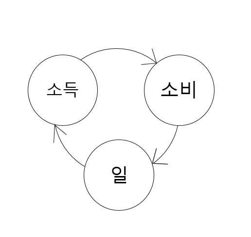옛날 사람들의 생활방식은 왼쪽 그림과 같았다. 일하고 돈 벌어서, 소비할 뿐이었다. 열심히 농사지어 돈 벌어 밥을 사먹거나, 열심히 무역해서 돈 벌어 밥을 사먹었다. 돈을 많이 벌면 빵을 1개 먹을 것을 2개 먹을 수 있었다.
하지만 돈을 벌어 투자를 해서 빵 공장을 만들 생각은 하지 못했다. 그 이유는 당시 사람들이 사회가 성장하지 않을 것이다라고 생각했기 때문이다.
옛날 사람들의 삶은 어제와 오늘이 같았고, 내일이 새로울 것이라고 생각하지 않았다. 그들은 이미 이 세상의 모든 것을 알고 있어서 더 이상 나아질 것이 없다고 여겼기 때문이다. 이 세상의 지식은 성경, 코란과 같은 정답지에 모두 나와있었다. 모르는 것이 있으면 나보다 많이 아는 사람을 찾아가 물어보면 해결되었고, 그들조차 모르는 것은 이 세상에서 별로 중요하지 않은 것이라 무시되었다.
그래서 부라는 것 즉, 파이의 크기는 항상 일정하다라고 생각했고, 돈을 이용해서 파이의 사이즈를 키워 경제를 성장시킬수 있다고는 상상조차 못했다.
전체 파이는 커지지 않을 것이니, 내가 부자가 되는 방법은 남의 파이를 뺏어오는 수밖에 없다. 그래서 어떻게 해야 남의 파이를 더 많이 뺏어올지 다시말해, 남들의 금,은을 내 것으로 만들 방법에만 집중했던 것이다.
그래서 옛날에는 부자가 나쁜 것이었다. 돈을 벌어 부자가 되었다는 말은 내가 남의 파이를 잘 훔쳐왔다는 말 그 이상이 될 수 없었다. 금욕, 절제 같은 것이 강조되고, 탐욕, 욕심은 버려야할 것이었다. '부자가 천국에 가는 것은 낙타가 바늘구멍을 통과하는 것보다 어렵다'라는 말이 괜히 나온 것이 아니었다.
이런 분위기 속에서 사업을 해 부자가 되려는 사람은 거의 없었다. 그럼에도 불구하고, 사업으로 부자가 되려는 사람이 있었다고 해보자. 하지만 그 사람도 곧 벽에 부딪히게 되는데, 아무리 열정이 강하더라도 막대한 사업자금을 제공해줄 경제시스템이 없었기 때문이다.
그렇게 밋밋하게 살아가던 사람들에게 사고구조, 생활방식의 틀을 완전히 바꿔주는 시스템이 등장하게 되는데, 바로 자본주의이다.2. 자본주의 시대
⓪자본주의의 등장 : 앎(知)에 대한 관점의 변화로부터
시간이 지나면서, 사람들의 생각구조기반이 신으로 대표되는 종교에서 수학,과학으로 대표되는 이성으로 변하게 된다. 그러면서 점차 우리가 세상의 대부분을 모르고 있었다라는 사실을 깨닫는다. 그래서 여러 관찰을 통해 자료들을 만들어내고, 일정한 패턴을 찾아 법칙화시켜 이론을 만들어내기 시작했다. 과학이 등장한 것이다.
그리고 시간이 좀 더 지나자 사람들은 과학으로 얻어낸 법칙을 실생활에 사용하기 시작한다. 증기기관을 만들고, 철도를 깔았다.
그렇게 산업혁명이라는 간판을 내걸고 사회를 뜯어고치기 시작한다.
그러면서 사람들의 생각이 조금씩 바뀌기 시작한다.
어?! 사회가 발전하는게 가능하겠는데!!
사람들의 사고구조가 변했다. 옛날 사람들이 사회는 나아지지 않을 것이라고 생각한 반면,
지식이라는 것에 대한 시선이 변하면서
세상이 더 좋아질 것이라는 기대를 하기 시작했다.
그리고 얼마 지나지 않아 사람들의 기대를 뒷받침해주는 자본주의라는 시스템이 만들어진다.
그럼, 지금부터 자본주의가 어떤 작동원리로 굴러가는지 간단한 이야기를 통해 알아보자.
①자본주의의 본질
(1) 자본주의의 핵심 엔진 #신용창출 #만질 수 없는 돈
A, B, 은행X만 있는 간단한 사회를 상상해보자. 그리고 이 사회에 돈이라고는 A의 현금 1000원이 전부이다.A가 손에 1000원을 꼭 쥐고 은행에 간다.
은행원이 세상 상냥한 미소로 친철하게 물어봐준다.
은행원 : 무슨 일로 오셨나요?
A : 1000원 예금하려구요.
은행원 : 알겠습니다. 1000원 주세요. -잠시 후- 예금 다 되었습니다.
은행원이 A에게 통장을 건넨다. 이제 A의 통장에는 1000원이 찍혀있다.
A: 호오~ 감사합니다.
A는 기분이 좋다. 은행에 돈이 안전하게 들어가 있으니 1000원을 도둑 맞을 일이 없을테니까.
잠시 후 B가 은행에 들어간다.
은행원은 또 다시 세상 상냥한 미소로 친절하게 물어봐준다.
은행원 : 무슨 일로 오셨나요?
B : 대출받으려고요.
B의 착한 눈빛에 믿음이 간 은행원은 대답한다.
은행원 : 알겠습니다. '저희 은행에 돈이 1000원 밖에 없으니;;' 900원 빌려드리겠습니다.
은행원이 B에게 통장을 건넨다. 이제 B의 통장에는 900원이 찍혀있다.
B도 기분이 좋다. 은행에서 돈을 빌렸으니 이젠 마음껏 돈을 쓸 수 있을테니까.
상황을 다시 한 번 생각해보자. 분명 사회 전체에 돈이라곤 A의 1000원이 전부였다. 하지만 은행원이 대출을 해주니 마법같은 일이 발생했다. A의 돈 1000원, B의 돈 900원. 사회의 돈의 양이 1000원에서 1900원으로 늘어난 것이다. 대출을 해주니 900원이라는 돈이 새로 태어난 것처럼 보인다. 도대체 무슨일이 벌어진 것일까?
이해를 쉽게 하기 위해 돈을 구분지어 생각해보자. 돈은 만질 수 있는 돈과 만질 수 없는 돈으로 나누어 볼 수 있다. 만질 수 있는 돈이란 쉽게 이해가 간다. 우리 지갑 속에 들어있는 현금 즉, 동전과 지폐를 생각하면 된다. 위의 이야기에선 A가 처음에 들고 있던 현금 1000원을 말한다. 그렇다면 만질 수 없는 돈이란 무엇일까? 컴퓨터 모니터나 스마트폰 속에서 숫자로만 보이는 돈 즉, B가 대출받은 900원이다.
현실에서 우리는 만질 수 없는 돈을 신용(credit)이라는 어려운 말로 사용한다. 또한 신용이라는 돈이 새롭게 태어났다라는 의미로 신용이 창출되었다라고 한다. 그리고 은행이 돈을 남겨두는 비율(우리 이야기에선 10%)을 예금자가 돈을 찾으러 왔을 때를 은행이 지급할 준비를 해놓아야 할 돈의 비율이라고 해서 지급준비율이라고 부른다.
그리고 은행은 이런 마법같은 신용창출을 무한정 반복시킬 수 있다. B가 900원을 Y라는 은행에 넣으며, Y은행은 900원의 10%인 90원만 남겨두고 810원을 C에게 빌려줄 수 있다. 810원을 대출받은 C가 Z라는 은행에 예금하면, Z은행은 81원을 남겨두고 719원을 D에게 대출해줄 수 있다. 이렇게 되면 사회에 돈이 1000원 + 900원 + 810원 + 719원 + ... 이 된다. 고등학교 때 배운 무한등비급수로 계산을 해보면 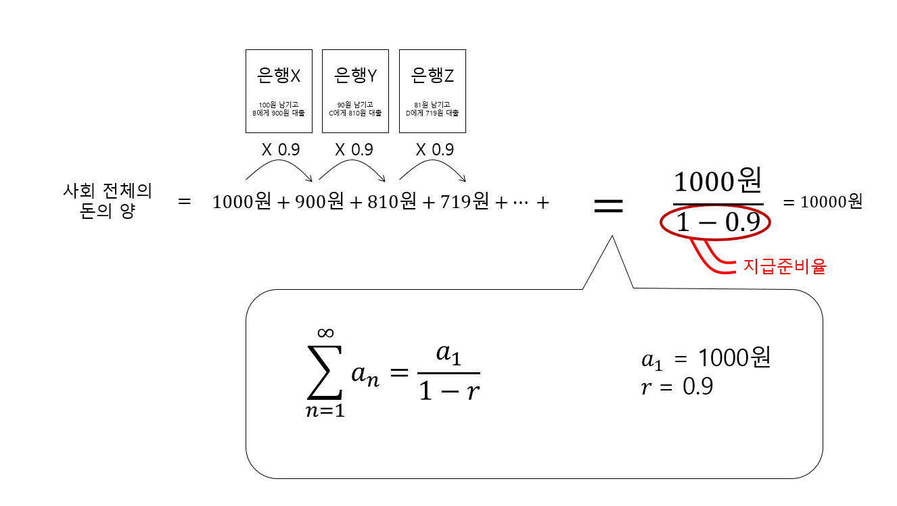 사회 전체 돈의 양이 1000원에서 최대 10000원까지 10배로 늘어날 수 있는 것이다.
신용창출하는 과정은 이쯤에서 마무리하자. 그런데 아까부터 찝찝한 점이 하나있다. 은행이 B에게 900원씩이나 빌려줘도 괜찮을까? B가 대출을 받은 후, A가 은행으로 돌아와서 1000원을 돌려달라고 하면 어떻게 될까? 은행원은 식은 땀이 줄줄 흐를 것이다. 은행원에게는 100원 밖에 남아있지 않기 때문이다. 그럼 A는 은행원에게 돈을 도둑 맞은 것일까? 지금 A는 은행에 1000원이 안전하게 보관되어있다고 생각할텐데, 은행원은 돈을 가지고 노는 사기꾼인 것일까? 언뜻 보기에도 사기꾼이것 같다. 하지만 그렇다면 우리가 사는 자본주의 사회 전체가 사기이다. 은행의 신용창출이 자본주의의 핵심이기 때문이다. 오늘날 대부분의 은행에서는 자신이 맡고 있는 예금의 일정부분만 남기고 나머지 돈은 합법적으로 대출해 줄 수 있다.
그러면 이런 구조가 굴러가는게 가능하긴 할까? A가 돌아와서 1000원을 전부 달라고 하면 은행은 그 자리에서 파산이다. 어떻게 이런 시스템을 유지시키는 것이 가능할까? 그 이유는 현실엔 예금자들이 엄청나게 많고, 그 사람들이 한 순간에 돈을 찾으러 오진 않기때문이다. 1000원을 예금하는 사람이 A만 있는 것이 아니라 10000명이 있다고 생각해보자. 은행에는 1000만원이 쌓인다. 그리고 그 중 90%인 900만원을 B와 그의 친구들에게 대출해줘도 은행에는 100만원이 남아있다. A를 비롯한 1000명이 한 순간에 맡긴 1000원을 찾겠다고 달려와도 은행은 끄떡없이 예금자들의 요구를 들어줄 수 있다. 현실에선 이보다 훨씬 많은 예금자와 예금액이 있기 때문에, 큰 문제가 없이 버틸 수 있는 것이다.
(2) 신용창출의 효과 : #파이 사이즈 키우기
현실에선 은행의 신용창출이 어떻게 이루어지는, 그리고 그것이 큰 문제를 일으키지 않는다라는 사실은 이제 이해가 된다. 하지만 은행은 왜 이런 행동을 하는 것일까? 왜 겉으로는 "언제든지 예금을 찾으러 오시면 돌려드립니다!"라고 떵떵거리면서, 속으로는 '모든 예금자가 한꺼번에 찾아와서 돈 빼간다고하면 어쩌지? 그럼 무조건 망하는데..'라고 맘 졸이고 있는 것일까? 은행이 스릴를 즐기는 것일까? 아니다. 은행이 어느정도의 위험을 안고가면, 얻게 되는 효과가 있기 때문이다. 바로 그 은행이 신용창출로 얻게 되는 효과가 자본주의가 생겨난 진짜 이유이다.은행이 신용을 창출하게 되면 새롭게 가능해지는 것이 있다. 바로 B가 대출을 받을 수 있게 되는 것이다. 그리고 B는 대출받은 돈으로 마음껏 사업을 할 수 있게된다. 카페를 차릴 수도 있고, 자동차 공장을 세울 수도 있다. 가진 것은 기가 막힌 카페를 차릴, 누구보다 튼튼한 자동차를 만들 수 있는 아이디어뿐인 B에게 그 꿈을 현실로 끌어올 수 있게 만들어주는 것이 바로 대출이다. 다시말해, 자본주의의 신용창출이 있기 때문에 사회의 파이 사이즈가 커지는 것이 현실적으로 가능해진 것이다. 다시말해, 신용창출이 가능하다면 '신용'이라는 돈을 가지고 '상상 속 사업'을 현실에 등장시키는 것이 가능해집니다.
지금보다 더 나은 삶을 살 수 있을 것이라는 인식이 퍼지면서, 은행원은 대출을 해주어도 괜찮다라는 생각을 하게된다. B에게 돈을 빌려주면, B는 사업을 성공시켜 많은 수익을 내고, 원금과 이자를 충분히 갚을 수 있다라고 여긴 것이다. 부자에 대한 인식도 좋게 바뀌었다. 내가 사업을 성공시켜 부자가 되면, 너의 물건도 사주어 너의 사업도 성공시켜줄테니까. 또한 남은 돈을 화려하게 사치하는데 소비하지 않고, 파이를 키울 수 있는 아이디어를 가진 다른 사람에게 투자를 해야한다는 생각이 자리잡았다.
(3) 신용창출이 바꾼 생활방식
이런 자본주의의 등장으로 인한 급격한 변화는 일하고 돈 벌고, 쓰기만 하던 옛날 사람들의 3단계 생활패턴에 한 가지 이벤트를 추가시켰다. 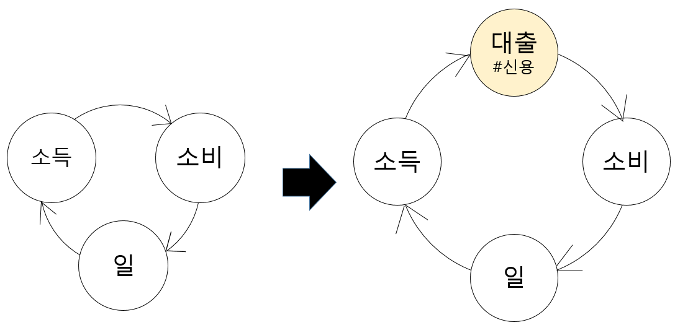 바로 대출을 가능하게 해줌으로서 소비를 늘릴 수 있는 한 가지 방법이 더 생겨난 것이다. 이 순환구조는 사회의 주체들 모두에게 구체적으로, 개인, 기업, 정부, 금융기관(은행)에게 모두에게 적용되었다.1) 개인
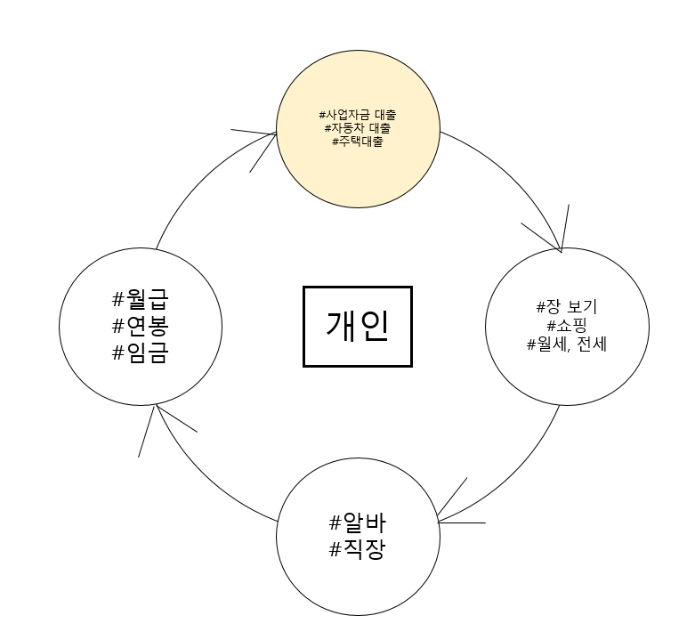 개인은 노동하고(일), 월급 받고(소득), 필요한 것을 사기(소비)만하다가 대출이라는 것을 이용해 추가적인 소비가 가능하게 되었다.2) 기업
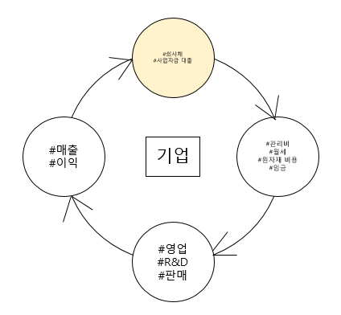 기업도 일하고(일), 매출 올리고(소득), 여러 비용을 쓰는(소비)하게 되는 구조에, 더 크게 사업을 확장시키는 것이 대출이라는 자금을 추가적으로 받게됨으로서 가능해졌다.3) 정부
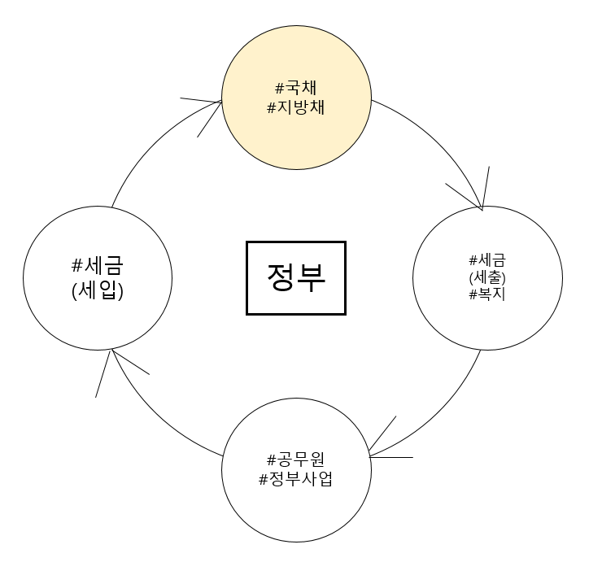 정부도 일하고, 세금 걷고, 세금 쓰는 과정에서, 세금이 부족하면 돈을 빌려(국채 발행) 추가적인 돈을 쓰는 것이 가능해졌다.4) 금융기관(은행)
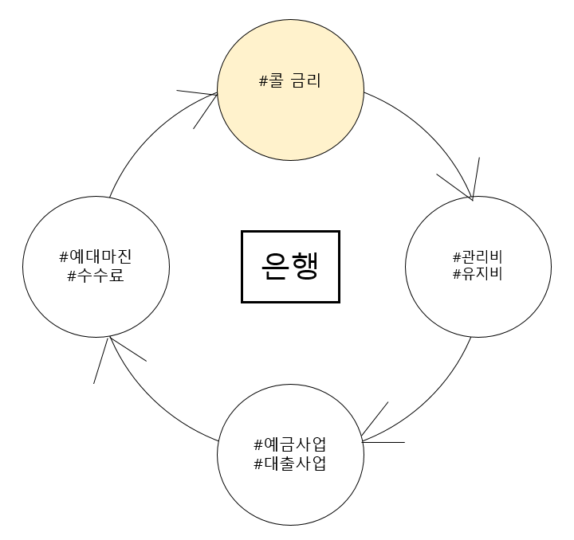5) 경제 전체
그렇다면 이 4단계 구조가 세상을 어떻게 바꾸어냈는지 사회 전체라는 좀 더 큰 관점으로 바라보자. 지금까지 해왔던 이야기를 단계별로 정리한다는 마음으로 살펴보자.ⅰ. 옛날 사람들
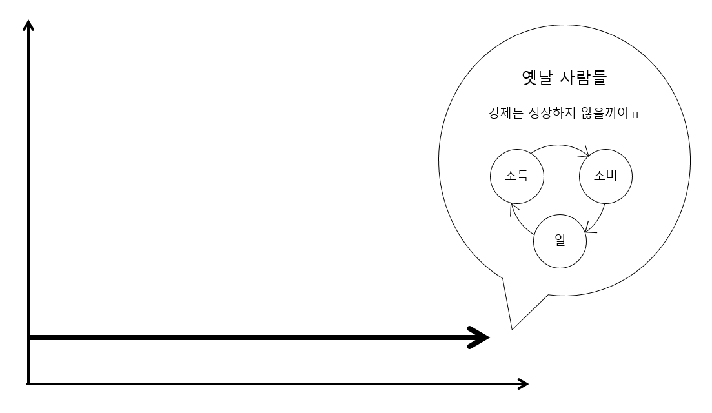 옛날 사람들은 세상이 성장할 것이라고 생각하지 않았다. 그래서 일하고, 돈 벌고, 돈 쓰는 구조에서 벗어날 수가 없었다.ⅱ. 오늘날 사람들
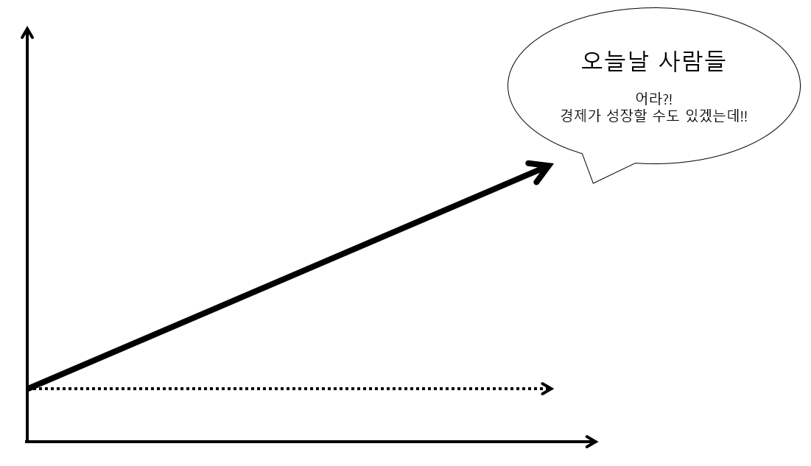 이성(수학, 과학, 기술)의 등장으로 앎(知)이라는 것에 대한 인식이 바뀌면서, 점차 사회가 성장할 수도 있겠다라는 기대를 품기 시작한다.여기서 알 수 있는 것이, 사회를 근본적으로 성장시키는 사람들은 결국엔 수학자, 과학자, 기술자들이라는 것을 알 수 있다. 우리는 이 그래프가 파이를 키우는 생산 그래프라고 할 것이다.
ⅲ. 자본주의의 등장 #경기순환
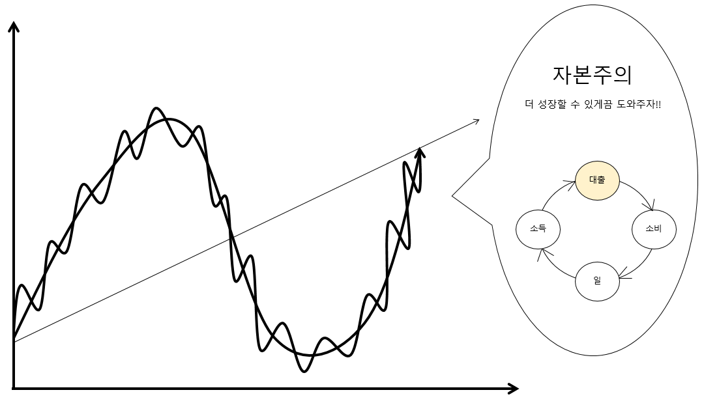 자본주의가 등장하면서 구조가 조금씩 복잡해지기 시작한다. 대출(신용창출)이 가능해지면서, 경기에 순환이라는 것을 만들어낸 것이다. 자본주의는 두 가지 순환을 만들어내는데, 하나는 단기 사이클이고 다른 하나는 장기 사이클이다. 하루를 볼 때, 낮에는 따뜻하고, 저녁에는 쌀쌀하면서도(단기 사이클), 좀 더 넓은 관점으로 볼 땐, 사계절이 있어서, 계절별로 온도가 달라지는 것(장기 사이클)과 비슷하다. 한 번에 모든 것을 이해하긴 어려우니, 두 가지를 나누어서 알아보자.ⅲ-1. 단기 신용 사이클
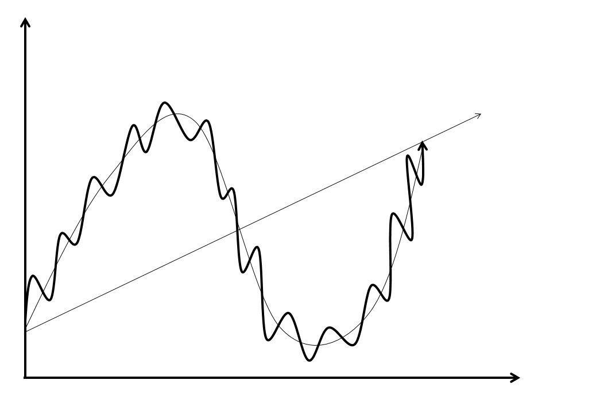 자본주의가 생겨남에 따라 우리는 대출을 받아 돈을 쓰기 시작한다. 우리는 흔히 대출을 받으면 나쁜 것이라고 생각한다.하지만 애초에 자본주의가 처음 생겨날 땐, 사회의 성장을 믿고 도와줄 의도로 생겨난 것이기 때문에 모든 대출이 나쁜 것은 아니다. 나쁜 대출도 있는 반면, 좋은 대출도 있는 것이다. 좋은 대출과 나쁜 대출을 가르는 기준은 대출받은 돈으로 사회를 성장시킬 수 있느냐의 유무이다.
빌린 돈으로 쓸데없는 과소비를 하는 것은 나쁜 대출이다. 이것은 우리가 옛날 사람들이 돈(금)을 가지고 사업할 생각은 안 하고 사치만 했던 것과 똑같은 행동이다.
반면, 좋은 대출은 빌린 돈으로 사업을 일으키고 성공시켜서 경제의 파이를 키우는 것이다.
만약 모든 주체들 전부가 좋은 대출을 받고 대출받은 돈이 경제 파이를 키우는데 100% 성공한다면, 생산 그래프의 상승 각도를 신용 그래프의 상승 각도로 크게 끌어올릴 수 있는 것이다. 자세히 살펴보면 마치 이렇게 대출을 받아 사람들이 열심히 그래프를 끌어올리려고 노력 중인 것이다. 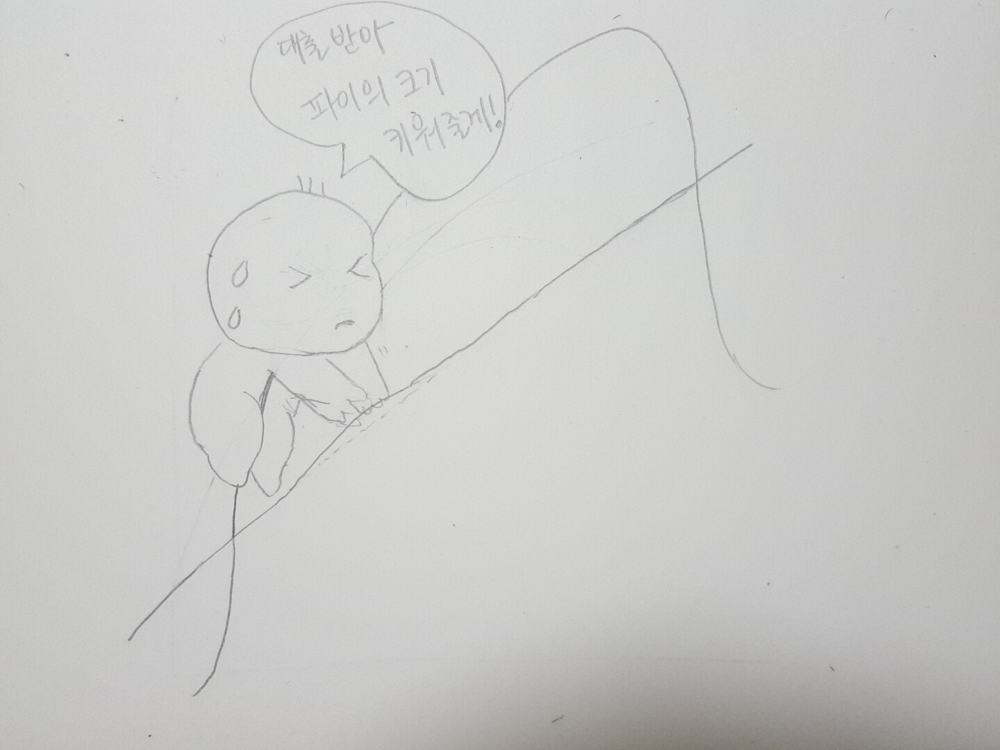
하지만 이 세상엔 나쁜 대출을 받는 사람도 있고, 세상 모든 일이 만만하지 않기에 사업을 하기 위해 돈을 빌렸지만, 실패를 하는 사람들도 많다. 결국 빌린 돈으로 경제 파이를 키우지 못하여 점차 신용 그래프와 생산 그래프와의 간격이 벌어지기 시작하는데, 우리는 그것을 보고 경제에 거품(버블)이 끼고 있다라고 이야기한다.
경제에 거품이 계속해서 끼다가 이건 좀 아니다 싶을 정도로 낀다면
은행이 이자율을 높힌다.
그렇게 되면 사람들이 대출 이자를 갚기가 힘들어지므로, 대출받는 것을 줄이기 시작한다. 그럼 자연스레 소비가 줄어들기 시작하고, 개인들이 소비를 안 하게 되면 기업은 난처해진다. 기업이 각종 비용을 낮추려할테니, 자연스레 일하는 사람들의 임금(월급, 연봉)도 조금씩 낮추게 된다. 임금이 낮아지니, 소득이 준다.
기업 입장도 마찬가지이다. 기업들도 이자율이 높아지면 이자 갚기가 힘들어지니, 확장시키려던 사업계획도 다시 한 번 들여다 보고 고민한다. 기업도 일거리가 줄어들고, 사람들이 물건을 안 사주니 소득도 줄어든다.
정부도 마찬가지이다. 사람들의 소득이 줄어드니 세금도 덜 걷히고, 국공채같은 국가도 돈을 빌리기 힘들어진다. 들어온 세금이 줄어들었으니, 복지를 하기도 점점 힘들어진다.
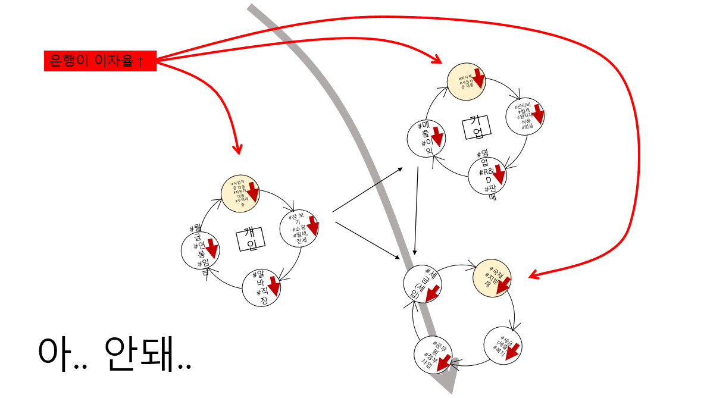반대로 경기가 너무 침체되어 있으면 이자율을 높여서 경기를 끌어올린다.
이렇게 은행은 경기 과열 상태를 보고 이자율을 조정하면서 경제를 관리한다. 이렇게 단기 이자율 곡선이 생겨난다.
ⅲ-2. 장기 신용 사이클
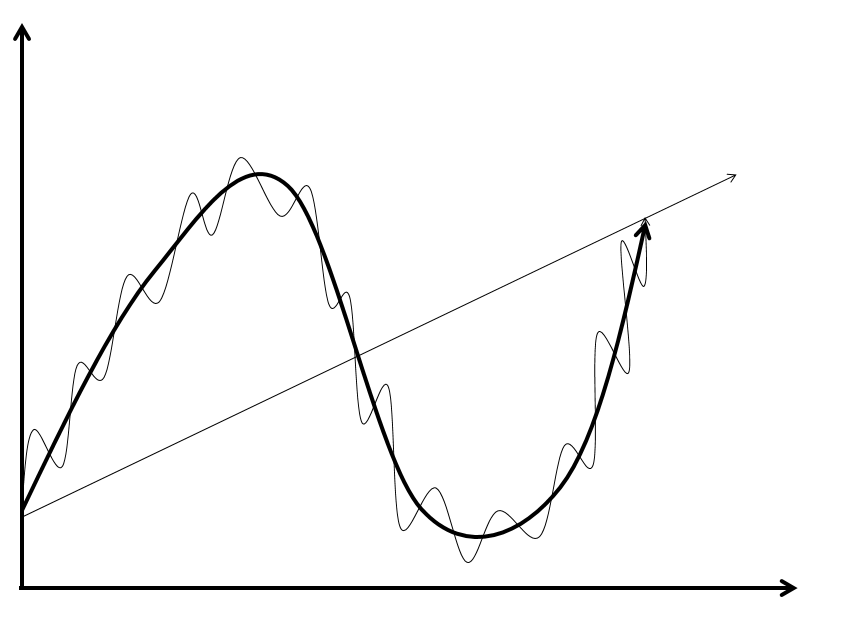 하지만 그렇게 은행이 이자율을 조절한다고 하더라도, 장기 부채 그래프는 꾸준히 상승하는데, 이것은 기본적으로 돈은 가급적 많이 빌려쓰고 싶고, 갚는 것은 피하고 싶어하는 본능적인 심리가 가져다 주는 상황이다. 마치 봄의 따뜻한 날에는 맨투맨만 입고, 저녁엔 쌀쌀해서 가디건을 걸치더라도, 길게보면 봄에서 여름으로 가고 있기 때문에 옷의 길이는 어찌되었든 점점 짧아지는 것과 비슷한 상황이다.아무튼 그렇게 거품이 쌓이다 어느 순간 순식간에 무너진다. 그 순간이 언제일지, 어떤 이벤트가 거품 붕괴 폭탄에 불을 붙일지는 아무도 모른다. 이것은 불안불안한 건물이 높게 쌓이다 보면, '언젠간 무너지겠지''라는 짐작은 쉽지만, 정확히 언제 어떤 이유로 붕괴되는 것을 맞추기는 어려운 상황과 같다. 경제가 안 좋아지면 사람들이 소비를 줄이기 시작한다. 한 푼이라도 아껴야 하기 때문이다. 그리고 가격이 떨어지고 있는 상황에선 오늘보단 내일이 가격이 더 떨어질테니 소비를 더 미룬다. 개인의 소비는 기업의 소득이기 때문에, 기업이 위험해지기 시작한다. 기업이 이번에는 임금을 줄이는 것으로 끝나지 않는다. 사태가 심각하다. 구조조정을 하고 실업자가 늘어난다. 직장에서 잘린 개인은 일을 하지 못하게 되니, 소득이 확 줄어든다.
그런데 여기서 단기 신용 사이클과의 가장 큰 차이점은 은행이 더 이상 이자율을 내릴 수가 없는 것이다. 이미 0%까지 내려서 이자율로 경제를 조절하는 기능은 사용할 수 없는 카드가 되어버렸다. 실제로 1929년 대공황, 1989일본, 2008금융위기 등 세계 곳곳에서 이런 일이 일어났다.
그럼 이 상황을 어떻게 해결할까. 1. 허리띠를 졸라맨다. 2. 부채를 탕감한다. 3. 부의 재분배. 3. 돈을 찍어낸다.
② 자본주의 특성
(1) 언제나 공급이 수요보다 많다 #공급과잉 #S>D
성장에 대한 기대로 생겨난 자본주의의 등장은 대출이라는 것을 만들어내면서 사회를 엄청나게 변화시켰다. 그 결과, 사업을 위한 공장들이 물밀듯이 생겨났다. 공장들은 쉬지 않고 물건을 뿜어내면서, 여지껏 보지 못했던 상황을 만들어낸다. 예전에는 밥, 옷 같은 것들이 필요해도 없어서 못 먹고 입었는데, 이젠 내가 원하는 것보다 상품이 많아진 것이다. 마트를 가던 백화점을 가던 물건은 항상 넘치고 그 중 내가 원하는 것을 고르는 상황은 자연스럽다. 즉, 자본주의 시대가 되면서 공급이 수요보다 항상 많은 상태가 된것이다.
공급과잉은 자본주의의 본질적 특성이다. 소비자 입장에선 공급과잉이 다양한 물건 중 맘에 드는 것을 고를 수 있게 해주어 좋아보이지만, 사회 전체적으로보면 공급과잉은 팔리지 않는 재고를 만들어내면서 심각한 문제를 만들어낸다. 자본주의 시스템에서 공급과잉은 자본주의가 생겨나면서 안고 태어난 가장 본질적인 문제이며, 모든 다툼과 갈등은 여기에서 출발한다.
내가 자동차 공장을 돌리고 있다고 해보자. 처음 세상에 자동차가 뿌려지기 시작할 땐, 너도 나도 하나씩 사려고 했다. 장사도 잘 되고 공장도 오전 오후 할 것없이 계속 돌렸다. 그러다 어느 순간이 되자 매출 속도가 줄어들기 시작한다. 모두들 차를 한 대씩 가지고 있어서 예전만큼 사람들이 사려고 하지 않는 것이다. 게다가 옆 동네, 뒷 동네, 앞 동네 너나할 것 없이 자동차 공장을 세워서 더 힘들어졌다. 창고에 팔리지 않은 자동차가 하나둘 쌓이기 시작한다. 자동차가 공급과잉된 것이다. 공장의 매출이 줄고 직원들 월급 주기가 힘들어진다. 어쩔 수 없이 한명 두명 자르기 시작하고, 상황은 점점 어려워진다.
(2) 공급과잉 해결책 #수요 늘리기
그럼 공급과잉을 어떻게 해결해야할까?
방법은 간단하다. 공급이 수요보다 많아서 문제가 된 것이니
대안1. S(공급)는 줄이거나
대안2. D(수요)는 늘리면 된다.
그런데 공급을 줄이는 대안1은 공장 자체를 멈춘다는 것이니, 별로 매력적인 선택지는 아닌 것 같다. 게임 한 판 졌다고 컴퓨터를 꺼버리는 꼴이니 말이다. 우리는 게임을 어떻게 이길지를 고민해야한다.
그럼 대안2. 수요를 늘리자. 수요를 늘리는 것. 이것이 자본주의 시대에서 사람들이 끊임없이 싸우는 근본적인 이유이다. 우리 기업 제품에 대한 수요를 다른 기업 제품에 대한 수요보다 크게 만드려고 경쟁하고, 우리나라 제품에 대한 수요를 다른나라 제품에 대한 수요보다 크게 만드려고 경쟁하는 것. 이게 모든 문제의 시작이다. 파이의 크기가 커졌든 일정하든 사이즈는 정해져있고, 그 중 누가 더 파이를 많이 가져갈지에 대해 다투는 것이다.
과거에는 식민지 전쟁(1,2차 세계대전)과 대공황이라는 형태로 나타났고, 요즘에는 무역전쟁, 환율전쟁이라는 새로운 형태로 등장한다. 하지만 형태가 어떻든 간에 그 본질은 수요에 대한 경쟁 즉, 파이에 대한 땅따먹기 싸움이다.